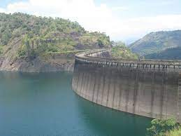

Idukki, a landlocked district of Kerala, is one of the most nature-rich areas in Kerala with more than half of the area covered with forest. This rugged hill resort is known for its wildlife sanctuaries, beautiful bungalows, tea factories, rubber plantations and forests. Idukki's speciality lies in 650 feet long and 550 feet high arch dam across the Kuravan Kurathi mountain, which is the largest in the country. Anamudi, which is the highest peak in India, south of the Himalayas, is also located in Idukki. Idukki is one of the districts in the state that has abundant scope for promotion of eco-tourism if proper infrastructure and promotional activities are provided.
Idukki
General Information

Area: 4,358 km2
Population: 1,093,156
Elevation:1,200 m
Official Language: Malayalam, English

Idukki Wildlife Sanctuary
Away from the hustle and bustle of the cities, the Idukki Wildlife is located in the Thodupuzha and Udumpanchola taluks of Idukki at an altitude of 450 – 750 ft above the sea level.

Idukki Arch Dam
The Idukki dam is constructed across the Periyar River, in a valley between the Kuravan and Kurathi hills in Kerala. The awe-inspiring, majestic dam, which stands at 167.68 meters (550 ft), is one of the highest arch dams in Asia. The dam, which is one of the Idukki tourist places, constructed by the Kerala government in 1975 and supports 780 MW hydroelectric power station that draws electricity from this dam.
Nadukani Pavilion
Nadukani, one of the Idukki tourist places, is situated between Thodupuzha and Idukki in the vicinity of Kulamavu. Nadukani Pavilion, a 2-storey building constructed and managed by the State Electricity Board, atop a hill is encompassed by the vast stretches of hayfields flanked by gargantuan rocks.